전파전자기능사(구) (2010-01-31 기출문제)
1과목: 임의 구분
1. 다음 중 지상계 통신 중 중거리 통신에 사용되는 주파수대는?(문제 오류로 실제 시험에서는 1,4번이 정답처리 되었습니다. 여기서는 1번을 누르면 정답 처리 됩니다.)
- 2 [MHz]
- 2 [kHz]
- 156.8 [MHz]
- 518 [kHz]
(정답률: 알수없음)

2. 수색 및 구조작업을 조정하는 조직체나 해안국이 그 통신에 혼선을 야기하는 무선국에 대하여 무선전화로 침묵을 명할 때 사용하는 용어는?
- SILENCE MAYDAY
- SEELONCE MAYDAY
- SILENCE SOS
- QRT MAYDAY
(정답률: 알수없음)
3. 통신보안의 목적에 해당되지 않는 것은?
- 통신내용을 입수하여 비밀을 알아내는 것
- 비밀누설 가능성의 사전제거
- 정보 누설량을 최소화
- 획득하려는 정보의 지연
(정답률: 알수없음)
4. 다음 중 ITU의 주요 임무가 아닌 것은?
- 무선 주파수의 위성궤도에 관한 국제적 관리
- 전기통신, 전파통신 및 방송분야 기술의 표준화
- 전파전자에 관한 자격증 교부 및 관리
- 개발 도상국에의 기술 협력
(정답률: 알수없음)
5. 자재보안에서 탈취, 탐지, 촬영, 관찰 및 복사의 방지 방법이 아닌 것은?
- 통신실의 소음 방지
- 통신소 내부 투시 방지
- 허술한 창문 철창 가설
- 중요성에 따라 경비원 배치
(정답률: 알수없음)
6. 도약성 페이딩이 발생했을 때 이를 경감시키는 방법으로 옳은 것은?
- 공간 다이버시티 사용
- 전파 다이버시티 사용
- 주파수 다이버시티 사용
- 수신기에 AVC 사용
(정답률: 알수없음)
7. 어떤 신호 파형의 진동수를 측정한 결과 1분 동안에 600회였다. 이 때 주파수는 몇 [Hz]인가?
- 1 [Hz]
- 10 [Hz]
- 60 [Hz]
- 600 [Hz]
(정답률: 알수없음)
8. 진행파가 반사되어 돌아온 반사파와 합쳐지면서 발생한 정지된 파동을 의미하는 것은 무엇인가?
- 진행파
- 반사파
- 정재파
- 입사파
(정답률: 알수없음)
9. 계속적인 경보를 이용할 수 있는 INMARSAT 정지위성 통신권내의 해역은?
- Sea area A0
- Sea area A1
- Sea area A2
- Sea area A3
(정답률: 알수없음)
10. "Estimated time of arrival"의 뜻의 약어인 것은?
- ETA
- NO
- NIL
- NC
(정답률: 알수없음)
11. 무선송신 설비에서 공중선 전류계의 지시가 1[A]이고, 공중선 실효저항이 15[Ω]일 때 공중선 전력은?
- 5 [W]
- 10 [W]
- 15 [W]
- 20 [W]
(정답률: 알수없음)
12. Before emitting, every station must listen ( ) a period long enough?
- as
- for
- it
- ever
(정답률: 알수없음)
13. 무선국을 개설하고자 하는 자는 누구의 허가를 받아야 하는가?
- 전파진흥원
- 전파관리소
- 방송통신위원회
- 전파진흥협회
(정답률: 알수없음)
14. “S" 자를 송신할 때 사용하는 단어는?
- Sierra
- Signal
- Sign
- Soul
(정답률: 알수없음)
15. 다음 중 무선국 허가의 결격 사유에 해당되지 않는 사항은?
- 외국정부 또는 그 대표자
- 대한민국의 국적을 가지지 아니한 자
- 대한민국에서 해당 국가의 외교업무를 하는 대사관에서 특정 지점간의 통신을 위하여 공관 안에 개설하는 무선국
- 전파법을 위반하여 금고 이상의 실형을 선고받고 그 집행이 끝나고 2년이 경과하지 아니한 자
(정답률: 알수없음)
16. 도체에 교류 전류를 흘리면 중심부일수록 주위의 자속 변화가 많기 때문에 그 변화에 의한 역기전력이 커져 전류가 흐르기 어렵게 된다. 이를 무엇이라 하는가?
- 외부 효과
- 상승 효과
- 하강 효과
- 표피 효과
(정답률: 알수없음)
17. 문맥상 괄호 안에 알맞은 단어는?
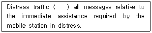
- comprises
- except
- removal
- disregard
(정답률: 알수없음)
18. 다음 중 고압전기에 해당되는 것은?
- 350[V]의 교류전압, 600[V]의 직류전압
- 600[V]의 교류전압, 750[V]의 직류전압
- 350[V]을 초과하는 교류전압, 600[V]를 초과하는 직류전압
- 600[V]을 초과하는 교류전압, 750[V]를 초과하는 직류전압
(정답률: 알수없음)
19. 선박 대 육상의 조난경보 DSC용으로 사용하는 주파수대가 아닌 것은?
- LF
- MF
- HF
- VHF
(정답률: 알수없음)
20. 문맥상 괄호 안에 가장 적당한 단어는?
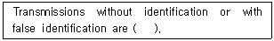
- prohibited
- imposed
- admire
- welcomed
(정답률: 알수없음)
2과목: 임의 구분
21. 단파통신이 원거리 통신에 적합한 이유로 타당한 것은?
- 직접파로 전파되기 때문에
- 지표면을 따라 전파되기 때문에
- 직접파와 지표면을 따라 전파되기 때문에
- 전리층 반사를 이용하여 전파되기 때문에
(정답률: 알수없음)
22. 다음 중 선박의 흘수를 나타내는 단어는?
- depth
- height
- draught
- mast
(정답률: 알수없음)
23. 지진·태풍·홍수·해일·화재, 그 밖의 비상사태가 발생하였거나 발생할 우려가 있는 경우로서 유선통신을 이용할 수 없거나 이용하기 곤란할 때에 인명의 구조, 재해의 구조, 교통통신의 확보 또는 질서 유지를 위하여 하는 무선통신을 무엇이라고 하는가?
- 조난통신
- 긴급통신
- 안전통신
- 비상통신
(정답률: 알수없음)
24. 통신보안과 통신정보의 비교 설명한 것 중 틀린 것은?
- 통신보안은 방대한 인력과 예산 소요
- 통신보안은 효과측정이 용이
- 통신정보는 국가안보에 중대한 공헌을 함
- 통신정보는 수집기능
(정답률: 알수없음)
25. 송신 안테나에서 발사된 전파가 수신 안테나에 도달할 때 여러 가지 통로의 차에 의해 시간적 차이가 생겨 같은 신호가 여러 번 되풀이되어 나타나는 현상은?
- 델린저 현상
- 공전
- 자기람
- 에코
(정답률: 알수없음)
26. It is necessary for an amateur station ( ) send signals for testing.
- as
- so
- for
- of
(정답률: 알수없음)
27. 다음 중 전압 안정화 회로에 주로 쓰이는 Diode는?
- 제너 Diode
- 바렉터 Diode
- 정류용 Diode
- 터널 Diode
(정답률: 알수없음)
28. 다음 중 위성의 공전주기와 지구의 자전주기가 같으므로 위성이 항상 제 자리에 위치하는 것처럼 보여 위성을 추적할 필요가 없는 위성은?
- 랜덤 위성
- 정지 위성
- 위상 위성
- 수동 위성
(정답률: 알수없음)
29. 약어 “WX"의 뜻을 옳게 나타낸 것은?
- Indication of a request
- Weather report
- General call to all stations
- I am closing my station
(정답률: 알수없음)
30. 다음 중 위성통신 지구국에 널리 사용되는 안테나는?
- 롬빅 안테나
- 웨이브 안테나
- 카세그레인 안테나
- 야기 안테나
(정답률: 알수없음)
31. “국제 NAVTEX 업무”란 영어를 사용하여 ( )로 행하는 협대역직접인쇄전신(NBDP)에 의한 해사안전정보(MSI)의 조정된 방송 및 그 자동수신을 말한다.
- 518[kHz]
- 120[MHz]
- 312[Hz]
- 620[GHz]
(정답률: 알수없음)
32. "전송할 것이 없습니다.“라는 무선 전신의 부호는?
- QRU
- QSU
- QSA
- QUM
(정답률: 알수없음)
33. 다음 알파벳 통화표의 발음에 대한 강세를 실선으로 표시하였다. 이 중 표기가 틀린 것은?
- F : FOKS TROT
- Q : KEH BECT
- L : LEE MAH
- T : TANG GO
(정답률: 알수없음)
34. If you have any telegram to send, please hand it on as ( ) as possible?
- clear
- soon
- fine
- long
(정답률: 알수없음)
35. 연합의 법률문서에 해당되지 않는 것은?
- 업무규칙
- 국제통신규칙
- 국제전기통신연합헌장
- 국제전기통신연합협약
(정답률: 알수없음)
36. 다음은 “ALUX"라는 호출부호를 음성통화표에 의하여 풀어 쓴 것이다. 맞는 것은?
- Alfa Lima Uniform X-ray
- Age Lime Unoins X-mas
- Aggree Leema Ultra X-phone
- Aut Lima Ultra X-ray
(정답률: 알수없음)
37. “수신 중, 너의 최종의 송신을 완전히 수신하고 이해하였다.”를 표시하는 절차 용어는?
- OUT
- ROGER
- OVER
- ACKNOWLEDGE
(정답률: 알수없음)
38. AM 수신기에서 1500[kHz]가 수신될 때 영상주파수는 몇 [kHz]인가?
- 1⑤0[kHz]
- 1500[kHz]
- 1945[kHz]
- 2410[kHz]
(정답률: 알수없음)
39. 무선설비를 조작하거나 설치공사를 하는 자로서 기술자격증을 발급받은 자를 무엇이라고 하는가?
- 시설자
- 무선관리인
- 무선종사자
- 무선이용자
(정답률: 알수없음)
40. 고주파 증폭 회로의 설명 중 옳지 않은 것은?
- Q가 큰 회로일수록 증폭 대역폭은 좁다.
- 고주파 전력 증폭회로는 C급으로 동작시킨다.
- 같은 조건에서 단일동조 회로가 복동조 회로에 비해 동조 주파수에 대한 이득이 크다.
- 동일한 Q를 갖는 경우 단일 동조 회로가 복동조 회로에 비해 대역폭이 넓다.
(정답률: 알수없음)
3과목: 임의 구분
41. INMARSAT 정지위성 통신권과 관련이 있는 해역은?
- A1해역
- A2해역
- A3해역
- A4해역
(정답률: 알수없음)
42. The station indistress may impose silence ( ) on all stations of the mobile service in the area or on any station which interferes with the distress traffic?
- not
- either
- there
- other
(정답률: 알수없음)
43. 국제전기통신연합의 언어에 오해나 분쟁이 있을 때는 어느 나라 말을 우선으로 하는가?
- 영어
- 불어
- 중국어
- 스페인어
(정답률: 알수없음)
44. 다음 중 브리지 정류회로의 장점이 아닌 것은?
- 각 다이오드의 최대 역전압비가 작다.
- 중간 탭이 없는 변압기를 사용할 수 있다.
- 정류 효율이 낮다.
- 고압 정류회로에 적합하다.
(정답률: 알수없음)
45. 전리층의 이론상 높이를 구하는 식으로 옳은 것은? (단, t는 지표파와 전리층 반사파와의 시간차, c는 빛의 속도이다.)
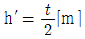
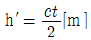
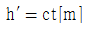
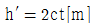
(정답률: 알수없음)
46. DSB와 비교할 때 SSB의 장점에 속하지 않는 것은?
- 송신기의 소비전력이 적다.
- 점유 주파수 대역폭이 1/2 이하이다.
- 동기성 페이딩의 영향이 적다.
- 적은 송신전력으로 양질의 통신이 가능하다.
(정답률: 알수없음)
47. 다음 중 도파관 전송의 장점이 아닌 것은?
- 저항체 손실이 적다.
- 유전체 손실이 적다.
- 저역 필터의 기능이 있다.
- 방사 손실이 적다.
(정답률: 알수없음)
48. 다음 뜻의 약어는?
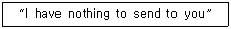
- NIL
- NO
- NW
- OL
(정답률: 알수없음)
49. 통신방식 중 무선통신의 취약성이 아닌 것은?
- 교신분석이 가능
- 기만 및 역이용
- 신속성 결여
- 장거리에서 쉽게 도청
(정답률: 알수없음)
50. 다음 중 ( ) 안에 들어갈 가장 적당한 단어는?
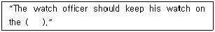
- bridge
- deck
- engine room
- hatch
(정답률: 알수없음)
51. GMDSS에서 사용하는 디지털선택호출장치(DSC) 조난, 안전주파수가 아닌 것은?
- 2187.5[kHz]
- 8414.5[kHz]
- 16804.5[kHz]
- 22375.5[kHz]
(정답률: 알수없음)
52. 반송파 전력이 50[kHz]의 경우 60[%]로 진폭변조 하였을 때 피변조파의 전력은?
- 50[kW]
- 59[kW]
- 68[kW]
- 80[kW]
(정답률: 알수없음)
53. 진폭변조의 경우 변조파형의 최대값이 A., 최소값이 B 일 때 변조도는 얼마인가?
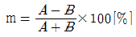
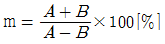
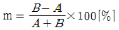
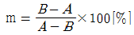
(정답률: 알수없음)
54. 수신기의 최대 유효감도의 표시 방법은?
- 규정된 수신기의 출력을 얻는데 필요한 수신기의 최소 입력 전압레벨로 표시한다.
- 규정된 수신기의 출력을 얻는데 필요한 수신기의 최소 입력 전류레벨로 표시한다.
- 규정된 수신기의 출력을 얻는데 필요한 수신기의 최대 입력 전압레벨로 표시한다.
- 규정된 수신기의 출력을 얻는데 필요한 수신기의 최대 입력 전류레벨로 표시한다.
(정답률: 알수없음)
55. 빔(beam) 안테나의 특징으로 옳지 않은 것은?
- 저 이득의 고지향성을 얻을 수 있다.
- 큰 복사전력을 낼 수 있어 전력 사용이 경제적이다.
- 주파수 이용도가 넓다.
- 근접 주파수의 혼신, 공진 등의 방해가 적다.
(정답률: 알수없음)
56. 방송통신위원회는 전파자원을 확보하기 위하여 마련해야 할 시책으로 옳지 않은 것은?
- 새로운 주파수의 이용기술 개발
- 이용 중인 주파수의 이용효율 향상
- 주파수의 국내국제 등록
- 국가간 전파의 혼신을 없애고 방지하기 위한 협의
(정답률: 알수없음)
57. 감도가 “크나 (음이) 찌그러졌습니다”의 표현은?
- loud but distorted
- weak but readable
- strong and readable
- loud and clear
(정답률: 알수없음)
58. 다음 한글 문장을 표준 해사 영어로 영역한 문장의 ( ) 안에 들어갈 가장 적합한 단어는?
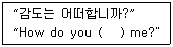
- read
- call
- answer
- listen
(정답률: 알수없음)
59. 다음 중 비밀누설에 대한 각종 방지법이 아닌 것은?
- 통신보안 생활화
- 통신규율 중시
- 중요내용은 전신부호를 사용
- 감독강화
(정답률: 알수없음)
60. 다음 중 무용자재의 긴급파기 순서는?
- 현재형-과거형-미래형
- 미래형-현재형-과거형
- 현재형-미래형-과거형
- 과거형-미래형-현재형
(정답률: 알수없음)